Chili con Carménère
Bonjour à tous !
Nous vous quittions il y a près de deux semaines dans notre avion pour la capitale du Chili, pays où nous avons passé une dizaine de jours à travailler dans un vignoble perché dans les hauteurs de Salamanca, petite ville andine à quatre heures de route au nord de Santiago. Mais revenons sur notre arrivée à l’aéroport de Santiago, le 18 février dernier.
D’abord, par rapport à nos semaines passées en Bolivie et au Pérou, c’est un vrai choc qui nous attend devant la découverte de cette ville qui n’a rien a envier à de nombreuses capitales européennes. Le pays est en effet la nation d’Amérique latine qui affiche la richesse par habitant la plus élevée, c’est donc dans un centre ville à l’aménagement charmant que nous déballons nos affaires. Nous choisissons le quartier de Bellavista, situé au pied d’une colline surplombant Santiago comme point de départ. Les boutiques d’objets design y affichent de jolies devantures et se mêlent aux petits restaurants à thème, et symbolisent le saut que nous venons de faire depuis le joyeux désordre de la vieille ville de La Paz.
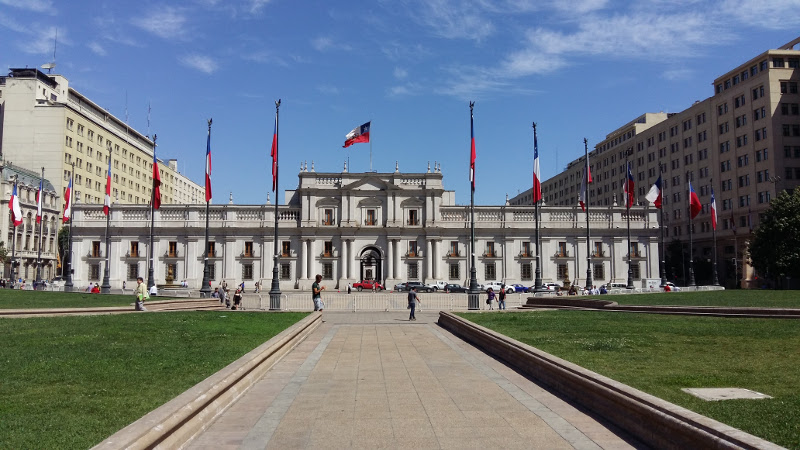
Le centre ville de Santiago, qui nous rappelle beaucoup plus les grandes villes européennes
Si ce centre ville, propre et aménagé, semble très agréable à vivre, il ne possède cependant pas d’attraits touristiques de poids, et nous nous décidons à faire une longue ballade reliant notre quartier à la Place principale et aux petites collines offrant des panoramas éclairés sur l’immense ville, qui regroupe tout de même le tiers de la population chilienne ! Après cet après-midi que nous couronnons d’un verre de vin local et d’un bon plat de viande, nous partons nous coucher tôt en préparation du lendemain.

Vue sur Santiago depuis le cerro San Cristobal
Nous avons en effet décidé de passer la semaine qui va suivre à travailler pour un vigneron français installé depuis plusieurs années au Chili, Arnaud Faupin. Celui-ci revient alors d’une opération de vente dans le sud de Santiago et en profite pour venir nous chercher sur place accompagné de son épouse chilienne, Paola. Cinq heures de route et quelques arrêts logistiques nous séparent de la vigne située plus au nord, à Salamanca, vallée au climat semi-aride où les cactus se mêlent aux rangées de vignes. Grégoire fait la route avec Paola, moi avec Arnaud et nous discutons des nombreux évènements qui ont mené ce natif de Franche-Comté à planter sa vigne dans un coin si retranché. Nous nous arrêtons également pour le déjeuner à Illapel, autre ville de la région, où nous sommes gentiment invités à la table des beaux-parents d’Arnaud. Nous reprenons ensuite la route pour, enfin, retrouver nos deux amies Alizée et Marine qui travaillent déjà à la vigne depuis une semaine !
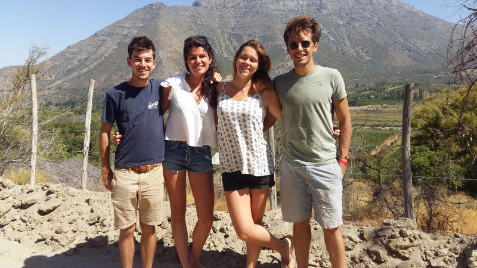
Retrouvailles avec Marine et Alizée !!
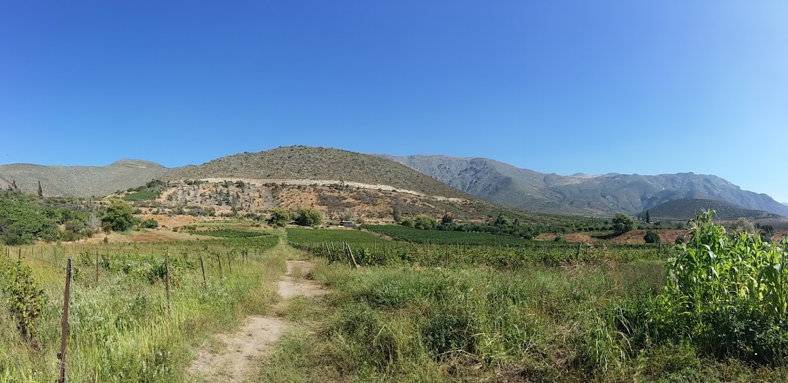
Notre petit coin de paradis dans la région de Salamanca, au Nord de Santiago
Sur place, nous découvrons un lieu au creux d’une vallée aux paysages méditerranéens, très isolé mais splendide, où la première des tâches qui nous attendent consiste à isoler les parois d’une maison destinée à accueillir les volontaires travaillant avec Arnaud pour les vendanges. Arnaud doit repartir pour Santiago mais, avant de reprendre la route vers le sud, il nous procure ses derniers conseils et nous explique que si l’eau et l’électricité sont en quantité limitée, nous pouvons nous servir à volonté dans un immense container rempli de bouteilles de sa production ! Laissés ainsi tous les quatre en autonomie et comblés par cette généreuse invitation, Alizée, Marine, Greg et moi partageons dans la douce lumière du soir notre premier verre de vin de la semaine en nous racontant nos dernières semaines de voyage.
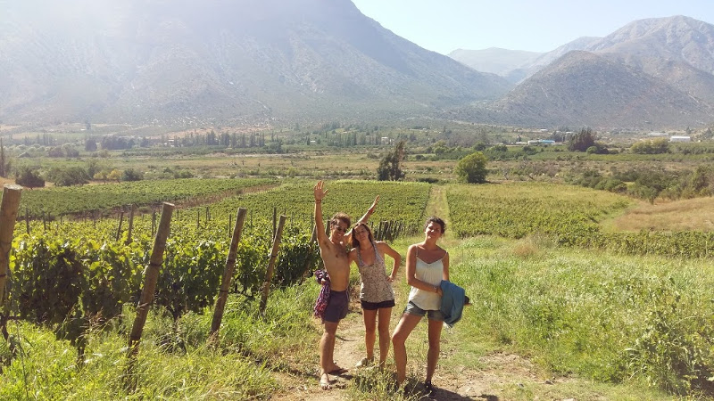
On profite du cadre et du climat
Le lendemain, réveillés par la lumière du jour (et par le vol des mouches qu’elle a réveillées) nous commençons notre première journée de travail. Nous devons bourrer de foin les parois d’une maison fabriquée à partir de palettes en bois avant de précautionneusement les recouvrir de maille de fer clouée. Alizée et Marine qui se sont fait la main en notre absence nous montrent les gestes à accomplir et, dans un premier temps, c’est bien laborieusement que nous tentons de les imiter. Les clous sont assez petits et les coups de marteau ratés pleuvent sur nos doigt avant que nous intégrions le geste, ce qui nous vaut bien sûr les railleries opportunes de nos deux formatrices… Que nous prenons avec le sourire. L’après-midi et à la fin de nos heures de travail, nous partons nous baigner dans une rivière qui court trois cents mètres plus bas, avant de profiter de la longue soirée que le choix singulier du gouvernement chilien en terme de fuseaux horaire nous offre. Entre la France et le Chili, seulement quatre heures de décalage horaire sont à noter, le soleil reste donc dans le ciel remarquablement tard ! Nous goûtons donc au Syrah, au Carmenere et au Vigneau les trois cépages principaux d’Arnaud, avant d’aller nous coucher peu après le coucher du soleil, absence d'électricité oblige…
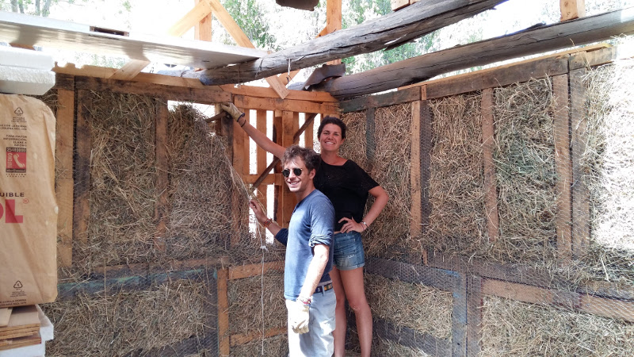
Notre mission construire une maison en palette et fourrer les murs de paille pour l'isoler
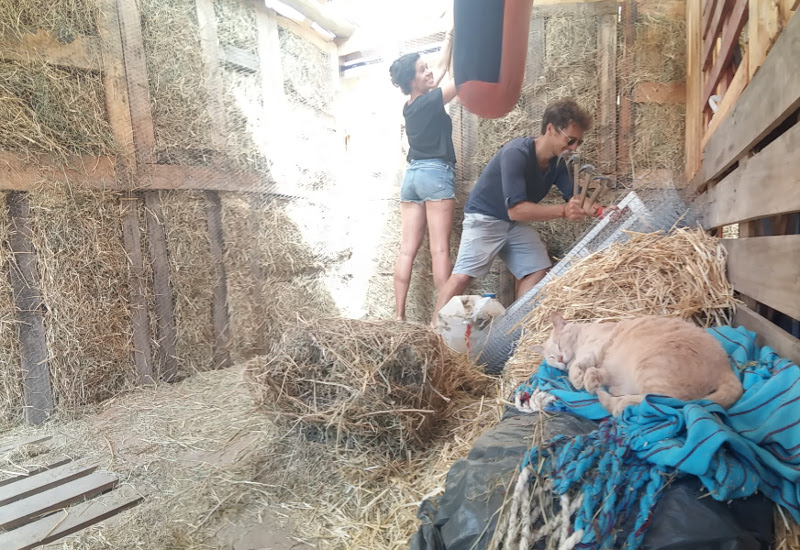
Attention aux coups de marteau sur les doigts, sous l’œil vigilant de notre gros chat Cortex
Alizée nous quitte malheureusement le 21 pour rejoindre le nord de l’Argentine. Marine s’attarde quelques jours de plus avec nous et nous profitons donc du rythme ralenti qui nous est offert en sa compagnie, renouant avec les cinq heures de travail journalier payant notre gîte et notre couvert, comme au cours de notre mois passé dans le Montana. Pressée par son voyage avec Alizée qui la mènera exactement d’où nous venons (la Colombie !) Marine nous quitte le 24 et Greg et moi nous retrouvons donc seul sur place en attendant le retour d’Arnaud. Ou presque seuls disons, car deux chats baptisés Minus et Cortex par Greg ainsi qu’un âne nous tiennent compagnie.
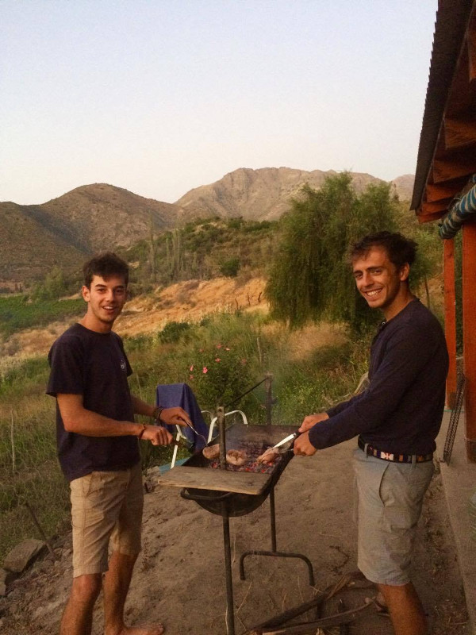
Tranquilles dans notre maison, on allume le barbecue pour le dîner du soir
Une fois Arnaud de retour, les journées s’intensifient car nous devons préparer, remplir, nettoyer, étiqueter et mettre en caisse plus de cinq cent bouteilles destinées à être vendue dans une Feria à la fin de la semaine. Greg et moi nous acquittons de la tâche en musique et, une fois les caisses préparées et chargées dans la voiture le lendemain, nous voici en route pour une Feria de bord de mer, sur le port de Pichidangui, où nous devons aider Paola à vendre les bouteilles !
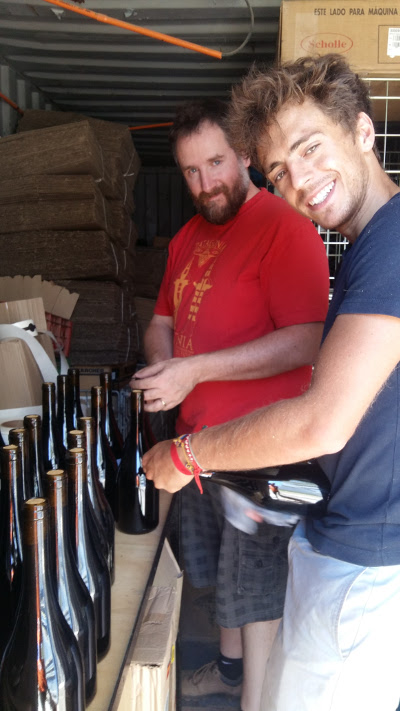
Séance d'étiquetage, entièrement à la main avec Arnaud
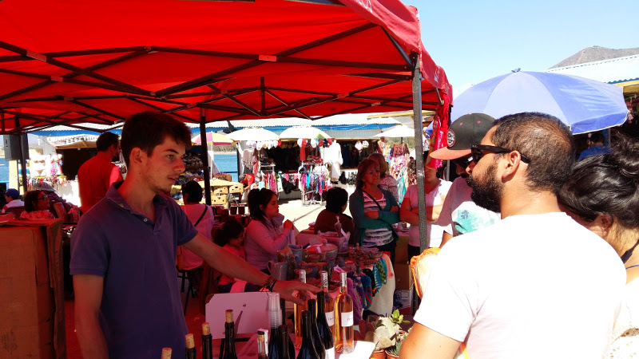
Sur le marché de Pichidangui, Grégoire sort ses arguments de vente pour vendre directement au consommateur
Bon, je dois avouer qu’avec mon niveau très rudimentaire d’espagnol, je suis réduit à un rôle plutôt logistique. Mais porter les caisses et sortir les verres à dégustation me permet d’admirer Greg dans une démonstration où il met en place tous les talents exigible des étudiants en commerce dans un espagnol convaincant ! Paola nous encourage et me voilà à essayer de répéter mot pour mot les phrases de Greg aux passants qui parfois, s’attroupent autour de notre stand. Ceux-ci sont friands de Carmenere, le cépage symbolique du Chili, et nous parvenons à en vendre quelques caisses. L’ambiance est chaleureuse, la plage charmante et les gens sympathiques, nous passons donc une excellente après-midi avec cette expérience de vente directe au consommateur. Nous rentrons tard le soir, dormons sur la route et nous sommes de retour à la vigne le lendemain pour profiter de nos deux derniers jours sur place… Le temps a passé vite !
Nous étiquetons quelques bouteilles supplémentaires, profitons de nos dernières soirées en goûtant de nouvelles bouteilles et nous baignons une dernière fois dans la rivière, en nous préparant au départ. La veille de celui-ci, un dernier défi nous attend ! Un groupe de touristes chiliens en visite dans un hôtel proche tape à la porte de la vigne en demandant si une visite et une dégustation sont possibles ! Arnaud est absent mais nous ne démontons pas et voilà que Greg fait découvrir à nos hôtes le domaine en commentant les cépages et les cuves alors que j’étiquette en urgence de nouvelles bouteilles à vendre… Comblés par leur tour, nos visiteurs repartent avec quatre bouteilles ! Nous nous couchons fiers de nous.
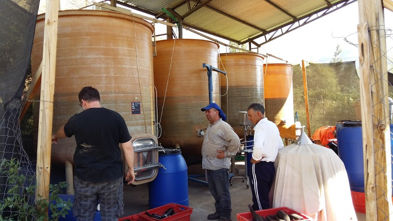
Visite du domaine et des cuves à vin
Une dernière étape à Illapel nous attend avant notre départ vers le célèbre port de Valparaiso, et nous passons la fin de journée en compagnie de Paola, de ses deux parents et de ses trois enfants… Une paire de jumeaux adorables (Antoine et Nicolas) et un petit dernier surexcité (Thomas) ! C’est aussi l’occasion pour nous de discuter de la période Pinochet avec leurs grands-parents qui nous racontent cette époque sombre, qui semble bien récente dans leurs bouches, mais dont nous ne percevons pas de traces à l’extérieur.
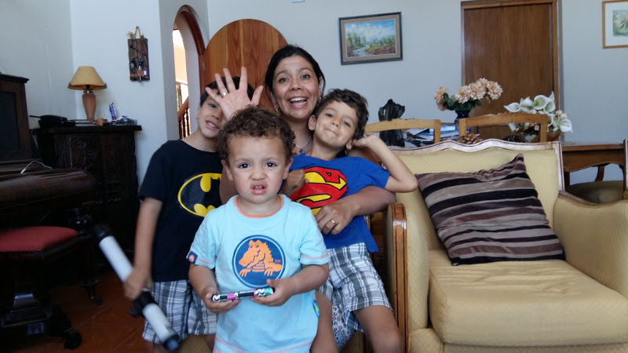
Paola, les deux jumeaux Antoine et Nicolas, et Thomas le petit dernier
Nous partons le 29 février pour Valparaiso où, après une route de quatre heures sur la spectaculaire côte chilienne, nous découvrons les collines colorées de cette charmante ville qui ne vole pas sa réputation. C’est d’ici que nous vous écrivons aujourd’hui, en attendant notre bus pour Cordoba, qui nous mènera dans le dernier pays de notre long périple, l’Argentine !
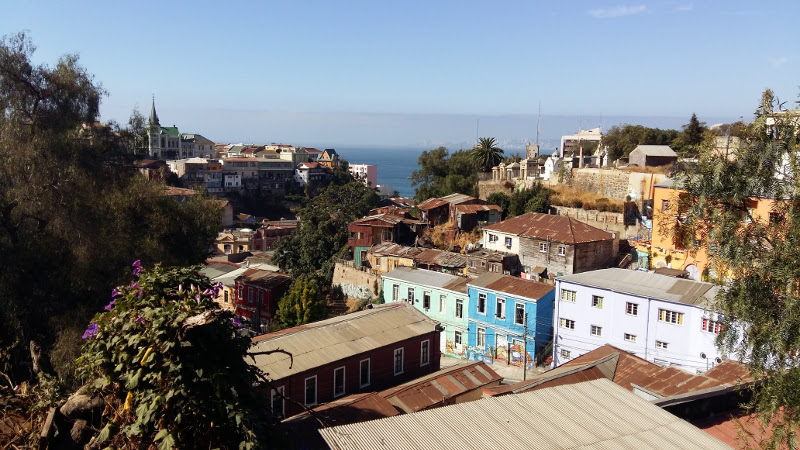
Valaparaiso, une jolie ville perchée sur les hauteurs
Allez, on sait que vous l'attendez avec impatience, le voilà : le jeu concours de la semaine ! Arnaud vend ses bouteilles entre 5000 et 8000 chilenos la bouteille (soit entre 6,50 et 10€), plutôt dans la moyenne haute pour le Chili. Mais à votre avis combien coûte la simple bouteille en verre sans rien dedans ?
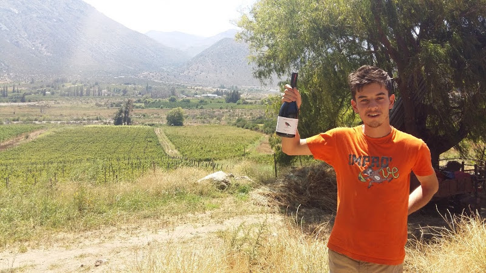
Combien coûte une simple bouteille de verre de vin (en chilenos ou en euros) sans rien dedans ?
Envoyez vos réponses à contact@aquamerica.fr et le gagnant aura une dédicace sur notre page Facebook ;)
Merci donc pour votre lecture et à bientôt !
Antoine